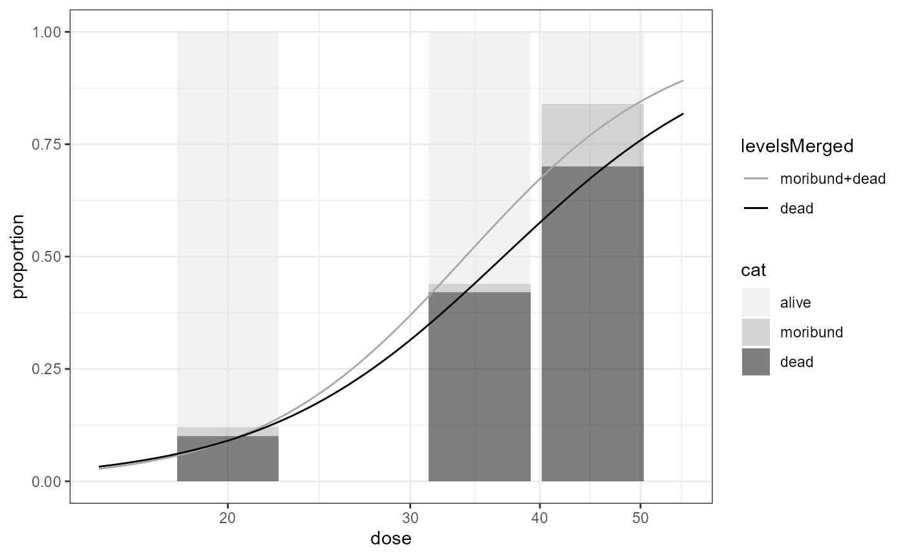

specialized-models.Rmd
library(bmd)
library(drc)
#> Warning: package 'drc' was built under R version 4.4.2
#> Loading required package: MASS
#>
#> 'drc' has been loaded.
#> Please cite R and 'drc' if used for a publication,
#> for references type 'citation()' and 'citation('drc')'.
#>
#> Attaching package: 'drc'
#> The following objects are masked from 'package:stats':
#>
#> gaussian, getInitial
library(drcData)
#>
#> Attaching package: 'drcData'
#> The following objects are masked from 'package:drc':
#>
#> auxins, nasturtium
data(guthion)
guthionS <- subset(guthion, trt == "S")
guthionS.LL <- drmOrdinal(levels = c("alive", "moribund", "dead"), weights = "total",
dose = "dose", data = guthionS, fct = LL.2())
plot(guthionS.LL, xlim = c(15,55)) # uses ggplot
bmdOrdinal(guthionS.LL, bmr = 0.1, backgType = "modelBased", def = "excess", R = 50)
#> BMD BMDL
#> moribund+dead 20.50104 17.11484
#> dead 20.59249 16.69573
library(drc)
library(drcData)
data(guthion)
guthionS <- subset(guthion, trt == "S")
guthionS.LL <- drmOrdinal(levels = c("alive", "moribund", "dead"),
weights = "total", dose = "dose", data = guthionS, fct = LL.2())
guthionS.LN <- drmOrdinal(levels = c("alive", "moribund", "dead"),
weights = "total", dose = "dose", data = guthionS, fct = LN.2())
guthionS.W1 <- drmOrdinal(levels = c("alive", "moribund", "dead"),
weights = "total", dose = "dose", data = guthionS, fct = W1.2())
guthionS.W2 <- drmOrdinal(levels = c("alive", "moribund", "dead"),
weights = "total", dose = "dose", data = guthionS, fct = W2.2())
bmdOrdinalMA(list(guthionS.LL, guthionS.LN, guthionS.W1, guthionS.W2),
modelWeights = "AIC", bmr = 0.1,
backgType = "modelBased", def = "excess", type = "Kang")
bmdOrdinalMA(list(guthionS.LL, guthionS.LN, guthionS.W1, guthionS.W2),
modelWeights = "AIC", bmr = 0.1,
backgType = "modelBased", def = "excess", type = "bootstrap", R = 50)
library(drc)
library(drcData)
library(bmd)
# install.packages("gridExtra") # OPTIONAL - USED FOR PLOTTING A drcHetVar OBJECT.
# ryegrass data
set.seed(123)
ryegrass.LL.4.hetVar <- drmHetVar(rootl ~ conc, ~ fitted + I(fitted^2),
data = ryegrass, fct = LL.4())
plot(ryegrass.LL.4.hetVar)
bmdHetVar(ryegrass.LL.4.hetVar, bmr = 0.1, backgType = "hybridPercentile", backg = 0.1,
def = "hybridExc", R = 50, level = 0.95, progressInfo = TRUE, display = TRUE)
bmdHetVar(ryegrass.LL.4.hetVar, bmr = 0.1, backgType = "hybridPercentile", backg = 0.1,
def = "hybridExc", R = 50, level = 0.95,
bootType = "parametric", progressInfo = TRUE, display = TRUE) # parametric bootstrap
# barley data
set.seed(123)
barley.LL.4.hetVar <- drmHetVar(weight ~ Dose, ~ fitted + I(fitted^2), data = barley, fct = LL.4())
plot(barley.LL.4.hetVar)
# GiantKelp data
set.seed(123)
GiantKelp.LL.4.hetVarSq <- drmHetVar(tubeLength ~ dose, ~ fitted + I(fitted^2),
data = GiantKelp, fct = LL.4())
plot(GiantKelp.LL.4.hetVarSq)
GiantKelp.LL.4.hetVarLogSq <- drmHetVar(tubeLength ~ dose, ~ log(dose+1) + I(log(dose+1)^2),
data = GiantKelp, fct = LL.4())
plot(GiantKelp.LL.4.hetVarLogSq)
library(drc)
library(drcData)
library(bmd)
# install.packages("gridExtra") # OPTIONAL - USED FOR PLOTTING A drcHetVar OBJECT.
# ryegrass data
set.seed(123)
ryegrass.hetVar.list <- list(
drmHetVar(rootl ~ conc, ~ fitted + I(fitted^2), data = ryegrass, fct = LL.4()),
drmHetVar(rootl ~ conc, ~ fitted + I(fitted^2), data = ryegrass, fct = LN.4()),
drmHetVar(rootl ~ conc, ~ fitted + I(fitted^2), data = ryegrass, fct = W1.4()),
drmHetVar(rootl ~ conc, ~ fitted + I(fitted^2), data = ryegrass, fct = W2.4()))
bmdHetVarMA(ryegrass.hetVar.list, modelWeights = "AIC", bmr = 0.1, backgType = "hybridPercentile",
backg = 0.1, def = "hybridExc", R = 100, level = 0.95)
#> Performing bootstrap
#> | | | 0% | |= | 1% | |= | 2% | |== | 3% | |=== | 4% | |==== | 5% | |==== | 6% | |===== | 7% | |====== | 8% | |====== | 9% | |======= | 10% | |======== | 11% | |======== | 12% | |========= | 13% | |========== | 14% | |========== | 15% | |=========== | 16% | |============ | 17% | |============= | 18% | |============= | 19% | |============== | 20% | |=============== | 21% | |=============== | 22% | |================ | 23% | |================= | 24% | |================== | 25% | |================== | 26% | |=================== | 27% | |==================== | 28% | |==================== | 29% | |===================== | 30% | |====================== | 31% | |====================== | 32% | |======================= | 33% | |======================== | 34% | |======================== | 35% | |========================= | 36% | |========================== | 37% | |=========================== | 38% | |=========================== | 39% | |============================ | 40% | |============================= | 41% | |============================= | 42% | |============================== | 43% | |=============================== | 44% | |================================ | 45% | |================================ | 46% | |================================= | 47% | |================================== | 48% | |================================== | 49% | |=================================== | 50% | |==================================== | 51% | |==================================== | 52% | |===================================== | 53% | |====================================== | 54% | |====================================== | 55% | |======================================= | 56% | |======================================== | 57% | |========================================= | 58% | |========================================= | 59% | |========================================== | 60% | |=========================================== | 61% | |=========================================== | 62% | |============================================ | 63% | |============================================= | 64% | |============================================== | 65% | |============================================== | 66% | |=============================================== | 67% | |================================================ | 68% | |================================================ | 69% | |================================================= | 70% | |================================================== | 71% | |================================================== | 72% | |=================================================== | 73% | |==================================================== | 74% | |==================================================== | 75% | |===================================================== | 76% | |====================================================== | 77% | |======================================================= | 78% | |======================================================= | 79% | |======================================================== | 80% | |========================================================= | 81% | |========================================================= | 82% | |========================================================== | 83% | |=========================================================== | 84% | |============================================================ | 85% | |============================================================ | 86% | |============================================================= | 87% | |============================================================== | 88% | |============================================================== | 89% | |=============================================================== | 90% | |================================================================ | 91% | |================================================================ | 92% | |================================================================= | 93% | |================================================================== | 94% | |================================================================== | 95% | |=================================================================== | 96% | |==================================================================== | 97% | |===================================================================== | 98% | |===================================================================== | 99% | |======================================================================| 100%
#> BMD_MA BMDL_MA
#> [1,] 1.093996 0.7095869
bmdHetVarMA(ryegrass.hetVar.list, modelWeights = c(0.4, 0.2, 0.1, 0.3), bmr = 0.1,
backgType = "hybridPercentile", backg = 0.1,
def = "hybridExc", R = 50, level = 0.95) # user-defined weights
#> Performing bootstrap
#> | | | 0% | |= | 2% | |=== | 4% | |==== | 6% | |====== | 8% | |======= | 10% | |======== | 12% | |========== | 14% | |=========== | 16% | |============= | 18% | |============== | 20% | |=============== | 22% | |================= | 24% | |================== | 26% | |==================== | 28% | |===================== | 30% | |====================== | 32% | |======================== | 34% | |========================= | 36% | |=========================== | 38% | |============================ | 40% | |============================= | 42% | |=============================== | 44% | |================================ | 46% | |================================== | 48% | |=================================== | 50% | |==================================== | 52% | |====================================== | 54% | |======================================= | 56% | |========================================= | 58% | |========================================== | 60% | |=========================================== | 62% | |============================================= | 64% | |============================================== | 66% | |================================================ | 68% | |================================================= | 70% | |================================================== | 72% | |==================================================== | 74% | |===================================================== | 76% | |======================================================= | 78% | |======================================================== | 80% | |========================================================= | 82% | |=========================================================== | 84% | |============================================================ | 86% | |============================================================== | 88% | |=============================================================== | 90% | |================================================================ | 92% | |================================================================== | 94% | |=================================================================== | 96% | |===================================================================== | 98% | |======================================================================| 100%
#> BMD_MA BMDL_MA
#> [1,] 0.964126 0.7893021
# barley data
set.seed(123)
barley.hetVar.list <- list(drmHetVar(weight ~ Dose, ~ fitted + I(fitted^2),
data = barley, fct = LL.4()),
drmHetVar(weight ~ Dose, ~ fitted + I(fitted^2),
data = barley, fct = W2.4()))
bmdHetVarMA(barley.hetVar.list, modelWeights = "AIC", bmr = 0.1, backgType = "hybridSD", backg = 2,
def = "hybridExc", R = 50, level = 0.95, progressInfo = TRUE, display = TRUE)
#> Performing bootstrap
#> | | | 0% | |= | 2% | |=== | 4% | |==== | 6% | |====== | 8% | |======= | 10% | |======== | 12% | |========== | 14% | |=========== | 16% | |============= | 18% | |============== | 20% | |=============== | 22% | |================= | 24% | |================== | 26% | |==================== | 28% | |===================== | 30% | |====================== | 32% | |======================== | 34% | |========================= | 36% | |=========================== | 38% | |============================ | 40% | |============================= | 42% | |=============================== | 44% | |================================ | 46% | |================================== | 48% | |=================================== | 50% | |==================================== | 52% | |====================================== | 54% | |======================================= | 56% | |========================================= | 58% | |========================================== | 60% | |=========================================== | 62% | |============================================= | 64% | |============================================== | 66% | |================================================ | 68% | |================================================= | 70% | |================================================== | 72% | |==================================================== | 74% | |===================================================== | 76% | |======================================================= | 78% | |======================================================== | 80% | |========================================================= | 82% | |=========================================================== | 84% | |============================================================ | 86% | |============================================================== | 88% | |=============================================================== | 90% | |================================================================ | 92% | |================================================================== | 94% | |=================================================================== | 96% | |===================================================================== | 98% | |======================================================================| 100%
#> BMD_MA BMDL_MA
#> [1,] 218.9167 151.2401
# GiantKelp data
set.seed(123)
GiantKelp.hetVar.list <- list(
drmHetVar(tubeLength ~ dose, ~ fitted + I(fitted^2), data = GiantKelp, fct = LL.4()),
drmHetVar(tubeLength ~ dose, ~ log(dose+1) + I(log(dose+1)^2), data = GiantKelp, fct = LL.4()))
bmdHetVarMA(GiantKelp.hetVar.list, modelWeights = "AIC", bmr = 0.1, backgType = "hybridSD",
backg = 1, def = "hybridExc", R = 50, level = 0.95, progressInfo = TRUE,
display = TRUE)
#> Performing bootstrap
#> | | | 0% | |= | 2% | |=== | 4% | |==== | 6% | |====== | 8% | |======= | 10% | |======== | 12% | |========== | 14% | |=========== | 16% | |============= | 18% | |============== | 20% | |=============== | 22% | |================= | 24% | |================== | 26% | |==================== | 28% | |===================== | 30% | |====================== | 32% | |======================== | 34% | |========================= | 36% | |=========================== | 38% | |============================ | 40% | |============================= | 42% | |=============================== | 44% | |================================ | 46% | |================================== | 48% | |=================================== | 50% | |==================================== | 52% | |====================================== | 54% | |======================================= | 56% | |========================================= | 58% | |========================================== | 60% | |=========================================== | 62% | |============================================= | 64% | |============================================== | 66% | |================================================ | 68% | |================================================= | 70% | |================================================== | 72% | |==================================================== | 74% | |===================================================== | 76% | |======================================================= | 78% | |======================================================== | 80% | |========================================================= | 82% | |=========================================================== | 84% | |============================================================ | 86% | |============================================================== | 88% | |=============================================================== | 90% | |================================================================ | 92% | |================================================================== | 94% | |=================================================================== | 96% | |===================================================================== | 98% | |======================================================================| 100%
#> BMD_MA BMDL_MA
#> [1,] 4.073336 0.6266271
library(drc)
library(drcData)
library(metafor)
#> Warning: package 'metafor' was built under R version 4.4.2
#> Loading required package: Matrix
#> Loading required package: metadat
#> Warning: package 'metadat' was built under R version 4.4.2
#> Loading required package: numDeriv
#>
#> Loading the 'metafor' package (version 4.6-0). For an
#> introduction to the package please type: help(metafor)
library(bmd)
set.seed(1)
data0 <- data.frame(x = rep(drcData::ryegrass$conc, 2),
y = rep(drcData::ryegrass$rootl, 2) +
c(rnorm(n = nrow(drcData::ryegrass), mean = 2, sd = 0.5),
rnorm(n = nrow(drcData::ryegrass), mean = 2.7, sd = 0.7)),
EXP_ID = rep(as.character(1:2), each = nrow(drcData::ryegrass)))
modMMRE <- drmMMRE(y~x, exp_id = EXP_ID, data = data0, fct = LL.4())
bmd(modMMRE, bmr = 0.1, backgType = "modelBased", def = "relative")
#> BMD BMDL
#> 1.669136 1.316628